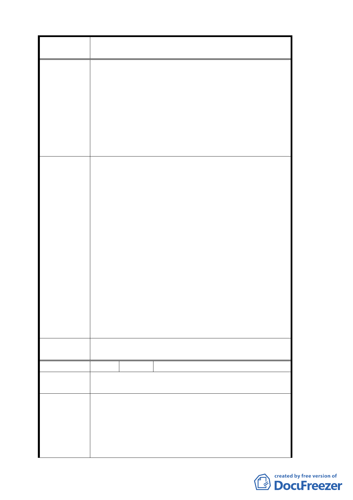

案 名 變更臺北市文山區指南里、老泉里部分保護區為休閒
產業特定專用區都市計畫案
5.3 區段徵收後市府可將可資利用之土地區域再售租
予有意從事經營或休閒產業經營之民眾並輔導其
依目前計畫之原始構想發展本區之經營特色創造
一個具產業遊憩特色之休閒產業專用區
5.4「區段徵收」後，對於區內應予保護、不適合開發
之地段，藉由公權力之介入，可更達保護、保育
之目的。
5.5 利用此方式應可創造市府、當地住民、經營者及廣
大市民四贏之成效。
1.休閒產業特定專用區內既有合法建築之申請基地面
積修正為 1000 平方公尺。
2.有關稅率適用問題，移請建設局及稅務機關參考辦
理。
3.有關申請開發許可辦理流程、作業須知及準備書件
本府都市發展局邀請各目的事業主管機關提供彙整
辦理，並於完成後提供民眾索取使用。
專案小組審
查結論
4.市府目前業已籌組跨局處之「貓空地區產業發展及
環境改善推動小組」推動相關工作。
5.有關原有不符本計畫土地使用分區管制之建築，修
正為三年內完成申請建築核准，核准二年內建築完
成。
6.本地區係配合產業發展特色，設置開發許可規範，
由開發者擬具開發計畫、水保計畫送本市都市設計及
土地使用開發許可審議委員會審查，通過後始得申請
建築。一方面較區段徵收更具彈性，另一方面也保障
仍作為農業使用之農民權益。
委員會決議
專案小組審查結論中「休閒產業特定專用區」乙詞修
正為「本計畫範圍」，其餘同審查結論。
編 號 １５ 陳情人 市議會轉張慕道等
陳情理由
該土地多為共同持有，如果要達到規範面積才能申請
開發許可的話實際上運作會有相當大的阻礙。
一、1650 平方公尺的門檻太高不易達成！希望將目前
已開店之店家輔導就地合法？
建議辦法
二、建蔽率 10％希望放寬至 15％？
三、如放寬成休閒產業特定區，關於營業稅、地價稅
等稅金的徵收，要有一定的稅率，整體配合考量，
避免店家未蒙其利、先受其害？
一三